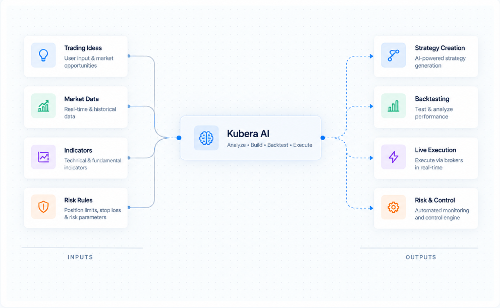

AI-assisted strategy creation
Trading strategies created with AI assistance within the platform.
Home / Case studies / Kubera AI
A trading platform combining AI-assisted strategy creation, market analysis, backtesting, execution workflows, and risk controls.
01 — Product
A trading platform combining AI-assisted strategy creation, market analysis, backtesting, execution workflows, and risk controls.

02 — The need
A trading idea has to become an explicit rule set before it can be tested, and writing that rule set is usually the step that stops an idea from ever being evaluated.
Testing, execution and risk control then have to refer to the same definition of the strategy, or the tested version and the live version are not the same thing.
03 — What AnvasTech built
AnvasTech built Kubera AI as a trading platform that combines AI-assisted strategy creation with market analysis, backtesting, execution workflows and risk controls.
04 — Capabilities
Trading strategies created with AI assistance within the platform.
Market analysis available in the platform.
Strategies tested against historical data.
Execution handled through defined workflows in the platform.
Risk controls applied within the platform.
Tell us what you are trying to build. We will tell you what it would take.